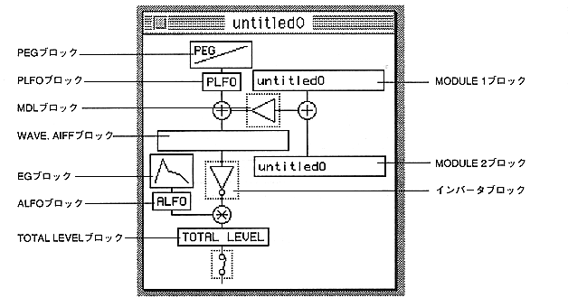

Multiple Slot windows can be displayed. However, only one parameter window can be displayed for all Slot windows.
You can edit parameters related to SCSP registers and open the parameter window.
By double-clicking the block in the Slot window, you can open the parameter (PEG), PLFO, ALFO, WAVE. AIFF, inverter block, EG, SLOTOUT, MODULE1, MODULE2, and MDL windows.
Each time the block is clicked, it is turned ON / OFF.
WAVE. AIFF block displays the name of the AIFF file used in that slot.
The MODULE 1 and 2 blocks display their layer names and are disabled when LEVEL (MDL) is 0 (page 37).
If you move the Slot window while holding down the Shift key, the parameter window that is open from that window will also move.